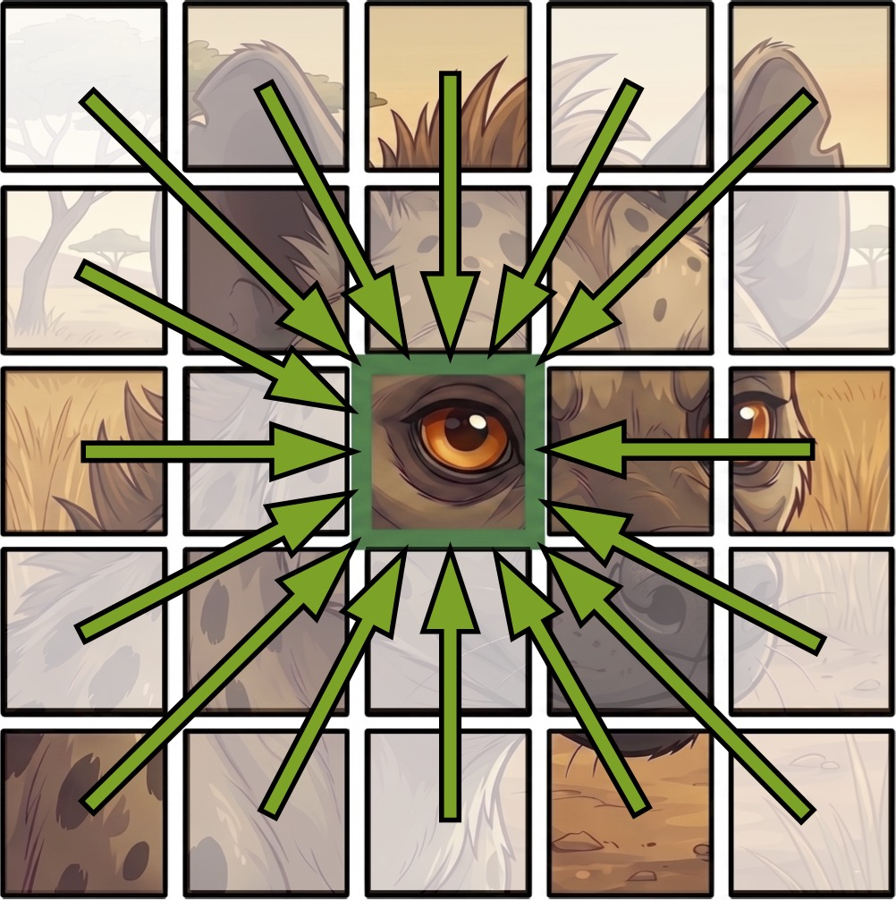
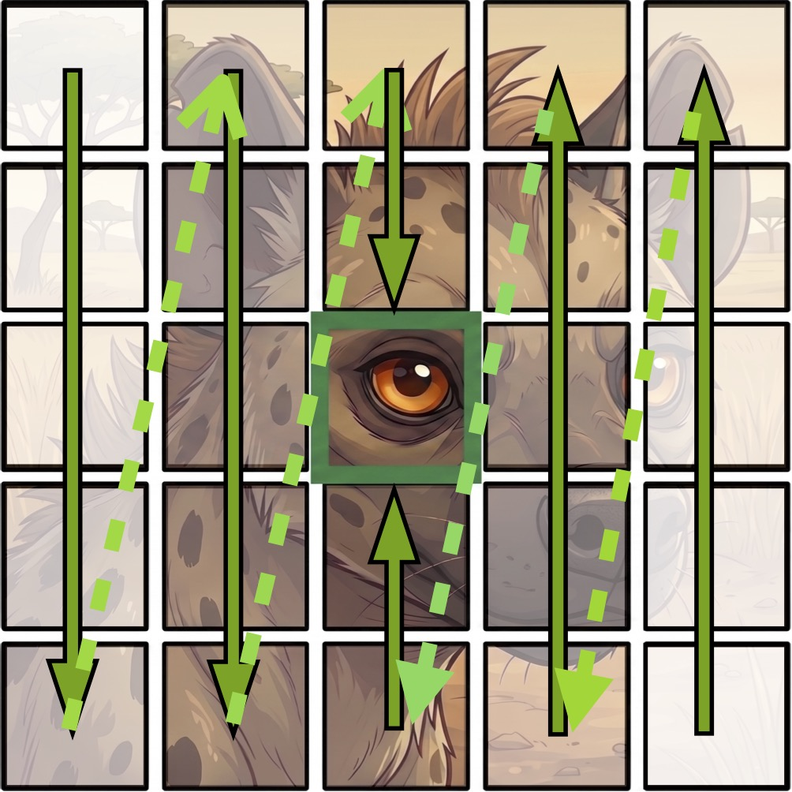
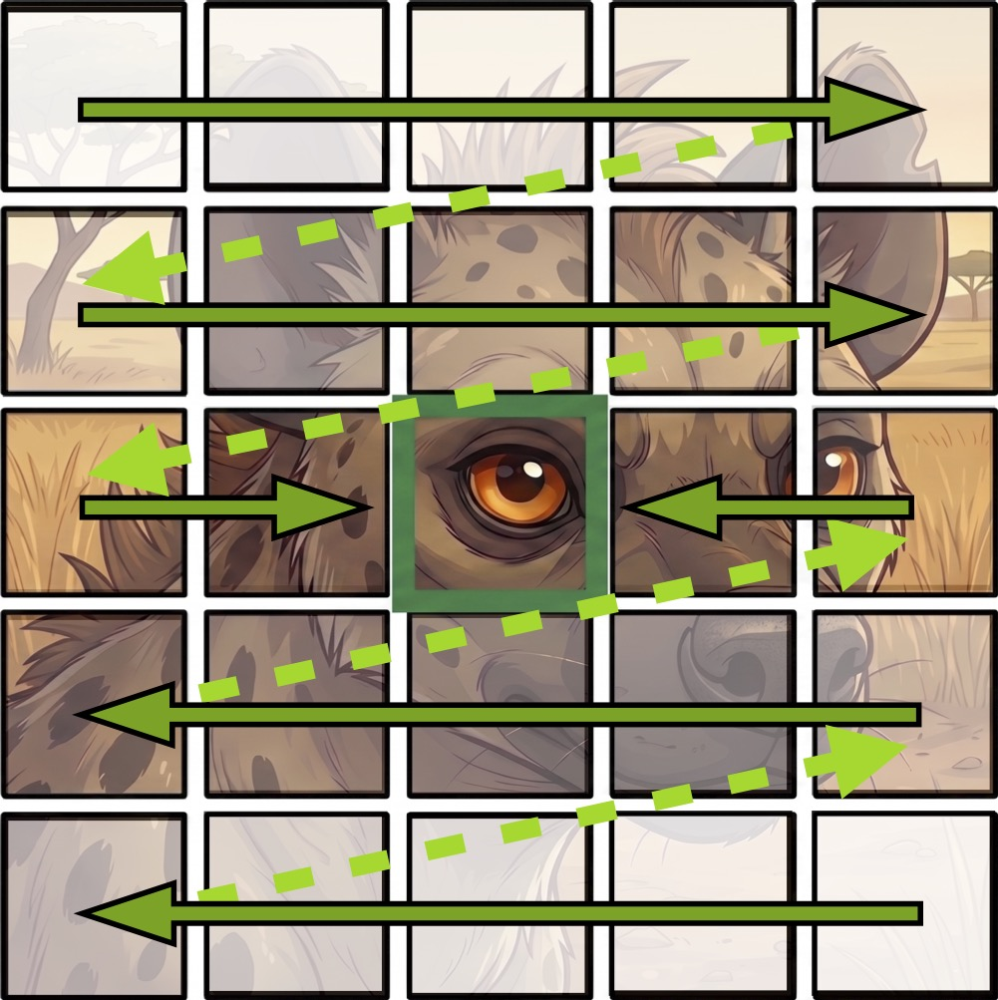
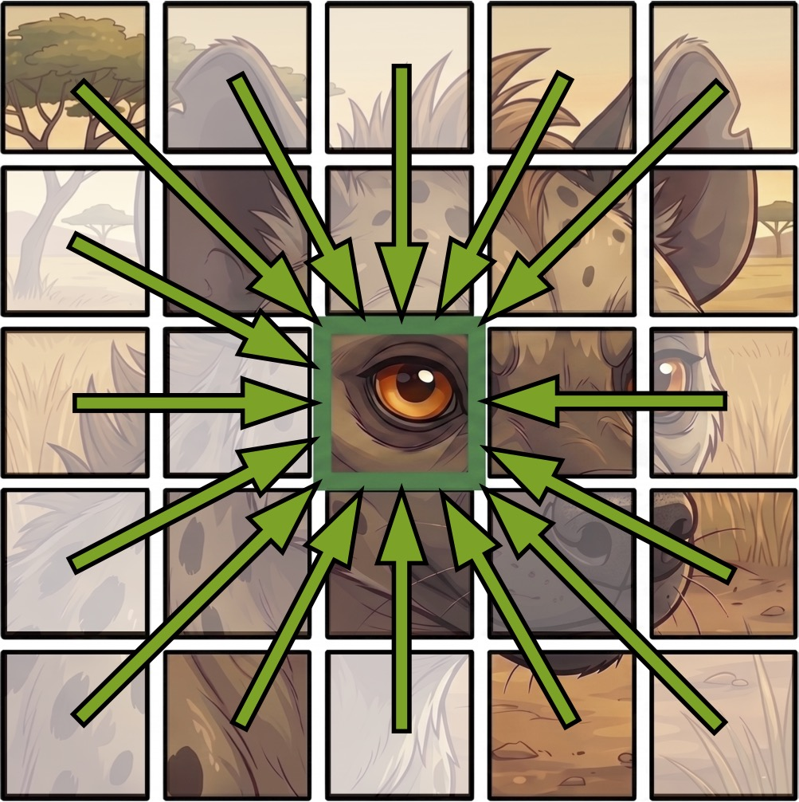
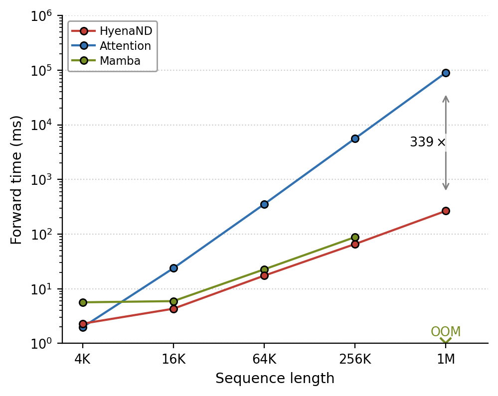

nvSubquadratic Documentation#
Attention is global, but it is quadratic and it ignores geometry.
Every token attends to every other token, so compute and memory grow as
O(N^2). A 256×256 image is already 65k tokens, and video or 3D
volumes are out of reach. To apply attention to an image at all you have
to flatten the grid into a 1D sequence and let the model relearn that
neighbouring pixels are neighbours.
nvsubquadratic is a unified, PyTorch-native library for subquadratic
alternatives to attention. They keep its global receptive field while
running in O(N log N), directly on native 1D / 2D / 3D
geometry. It consolidates efforts from across NVIDIA Research teams
(nvResearch, NeMo, BioNeMo) into a single, consistent API. The current
release centres on multi-dimensional HyenaND operators backed by
optimized CUDA kernels from subquadratic_ops_torch.
The figure below summarises the trade-off. (Left) Attention is natively
multi-dimensional but scales quadratically. Mamba is subquadratic but
inherently 1D, so it needs an ad-hoc 1D scan order to touch
multi-dimensional data, and no single ordering respects 2D locality.
HyenaND is global, natively multi-dimensional, and subquadratic at
the same time. (Right) That O(N log N) complexity is real wall-clock time:
HyenaND scales to million-token sequences while attention
collapses at long context.
If you are new to the library, start with How HyenaND works, which builds the operator up from attention in a few minutes. Then come back for install and the package tour.
| Attention | Mamba | HyenaND (Ours) | |
|---|---|---|---|
|
 |
 |
 |
 |
| 𝒪(L²) | 𝒪(L) | 𝒪(L log L) | |

flash-attention, the official mamba_chunk_scan_combined
Mamba2 kernel, and nSubQ (HyenaND).
Installation#
pip install nvsubquadratic
This installs the full training/experiment stack — nvSubquadratic targets GPU workflows.
Optional extras:
pip install "nvsubquadratic[cuda]" # accelerated fused FFT-conv / causal-conv CUDA kernels
pip install "nvsubquadratic[quack]" # fused RMSNorm kernel (Hopper/Blackwell only)
pip install "nvsubquadratic[dali]" # NVIDIA DALI data pipelines for the examples
pip install "nvsubquadratic[distributed]" # megatron-core, for context-parallel / distributed training
pip install "nvsubquadratic[baselines]" # timm, for the ConvNeXt UNet baseline models
pip install "nvsubquadratic[all]" # all of the above
The accelerated CUDA kernels ([cuda]) are a source build requiring nvcc
and are kept out of core, so pip install nvsubquadratic also succeeds in
environments without the CUDA toolkit. The operators default to the portable
torch.fft backend; fft_backend="subq_ops" without [cuda] raises a
clear ImportError.
For development (editable install from source):
pip install -e ".[all]"
Requirements#
Python 3.10 or higher
For GPU execution: a CUDA-compatible NVIDIA GPU and CUDA Toolkit 12.0+
For the accelerated kernels (
[cuda]):nvccto buildsubquadratic-ops-torch-cu12
Where to go next#
How HyenaND Works: the conceptual on-ramp. It builds the operator up from attention (global receptive field + data-dependence) and shows how it gets both for
O(N log N)via implicit kernels, the FFT, and gating.Getting Started: install, requirements, and a minimal “Hello, Hyena” forward pass.
Architecture: the three-layer nvSubquadratic / subquadratic-ops / megatron-core story and the BHL/BLH naming conventions.
Repository Overview: bottom-up tour of what’s inside
nvsubquadratic/(ops / modules / networks / parallel / utils).Lazy-Config System: how every run is described by one config file, with deferred instantiation,
${...}interpolation, and the base-config + ablation workflow.Benchmarks: FLOP scaling, kernel speedups, and a worked ViT-5-Small ImageNet training optimization case study.
Reports: long-form technical reports backed by reproducible scripts and figures.
Glossary: quick definitions for SIREN, FiLM, implicit filter, Toeplitz, register tokens, BHL/BLH.
API Reference: auto-generated reference for the curated public surface organised by package (ops, modules, networks, parallel, core, experiments), opening with the FFT-convolution ops primer (math motivation + function decision tree).
Contributor docs#
CONVENTIONS.md: Google-style docstring guide and PR checklist (lives at the repo root).